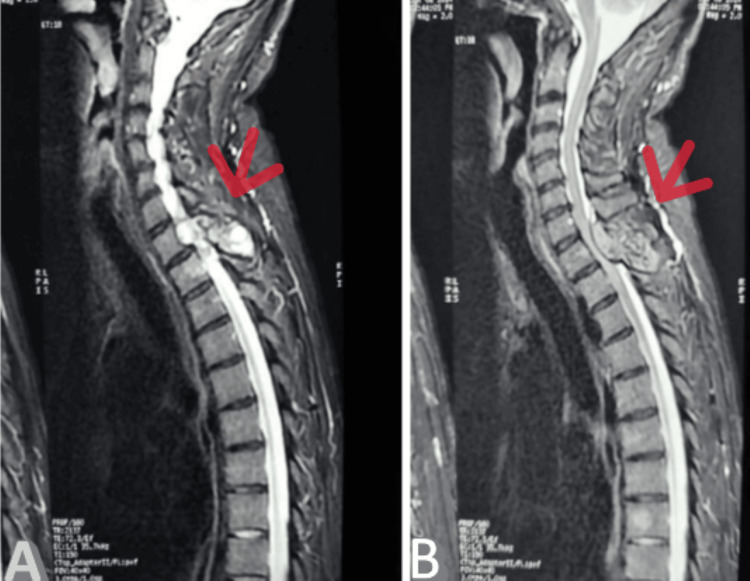
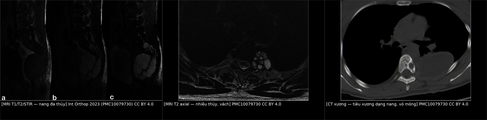
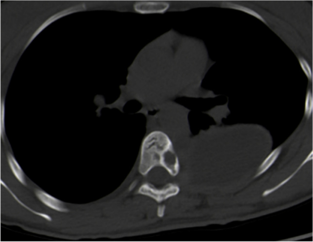
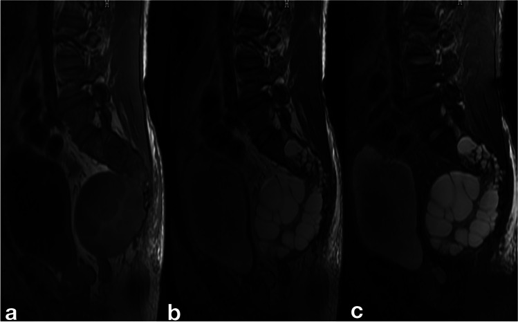
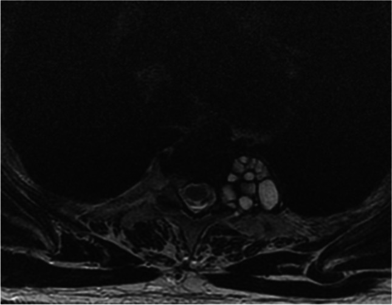

302 — Nang sán xương & cột sống ở trẻ: tiêu xương "chùm nho" & chèn ép tủy / Osseous & spinal hydatid disease in children
Tags: pattern:tieu-xuong pattern:nang vung:cot-song vung:co-xuong-khop score:Braithwaite-Lees protocol:MRI-cot-song protocol:CT-xuong
Mức chắc chắn (certainty): tổng hợp y văn (literature synthesis) — 1 review hệ cột sống + 3 đoàn hệ/ca bệnh có ảnh gốc; phần đặc thù trẻ em dựa trên các ca nhi được review trích dẫn và được ghi rõ là bằng chứng mức ca bệnh, không phải đoàn hệ nhi.
1. Tổng quan bệnh học – cơ chế hình ảnh
- Tác nhân & đường vào: Echinococcus granulosus (thể nang — CE) là chủ yếu; E. multilocularis (thể hang — AE) hiếm hơn nhưng cũng gây tổn thương xương. Ấu trùng theo đường máu tới xương; xương chỉ chiếm 0,5–4% toàn bộ ca sán, và ~45–50% ca xương nằm ở cột sống (review PMC8142696; PMC10559363 ghi 45%).
- Vì sao xương khác hoàn toàn nang sán ở gan/phổi: xương không có vỏ xơ (pericyst) và không có khoang mềm để nang phồng lên. Các túi sán mọc men theo bè xương (spongy bone), phá hủy từng bè một → hình tiêu xương nhiều thùy, "chùm nho", bờ không có viền xơ đặc (non-sclerotic), vỏ xương mỏng và phồng ra (cortical thinning), không có phản ứng màng xương (PMC10079730).
- TẠI SAO hình ảnh như vậy:
- X-quang: vùng tiêu xương đa thùy, bờ mờ ("hazy"), không có màng xương/không có gai xương; 21,1% ca X-quang bình thường trong đoàn hệ 44 ca (PMC10079730) — vì vậy X-quang âm không loại trừ.
- CT: tổn thương giảm đậm độ dạng nang, phồng xương, vách xương còn lại, không ngấm thuốc trung tâm, chỉ có thể ngấm viền mỏng; vôi hóa gặp 13,2% trên X-quang nhưng 35% trên CT (PMC10079730) — vôi hóa dạng "cung đôi" (double layer arcuate) được xem là khá đặc hiệu cho sán xương so với nang xương khác (PMC8142696 dẫn lại; PMC10079730).
- MRI: nang chứa dịch → T1 thấp, T2 rất cao, các vách/nang con T2 thấp tạo hình "chùm nho"/"bánh xe"; không phù tủy lan rộng như viêm; sau tiêm chỉ viền mỏng. MRI là phương thức tốt nhất để đánh giá chèn ép tủy, lan màng cứng và tái phát (PMC8142696).
- Ngưỡng định lượng dùng trong bài: xương 0,5–4% ca sán; cột sống 45–50% ca xương; ngực ~50%, lumbosacral ~29%, thắt lưng ~21% (PMC8142696); huyết thanh trong sán cột sống Se 25% / Sp 56% so với Se 80–100% / Sp 88–96% trong sán gan (PMC8142696); tái phát 30–100%, 41% trong 39 ca (PMC10559363), 52,2% trong 44 ca (PMC10079730); mổ + hóa trị tái phát 5% so với mổ đơn thuần 32% (PMC8142696 dẫn Turgut).
2. Mẫu hình + chẩn đoán phân biệt theo vị trí (gamut)
Theo khoang giải phẫu (dùng cho mọi lứa tuổi, kể cả trẻ) — Braithwaite & Lees 5 type:
- Type 1: nang trong tủy (intramedullary) — cực hiếm.
- Type 2: nang trong màng cứng, ngoài tủy (intradural extramedullary).
- Type 3: nang ngoài màng cứng, trong ống sống (extradural intraspinal) — hay gặp nhất, 66,7% trong đoàn hệ 39 ca (PMC10559363).
- Type 4: nang trong thân đốt sống (vertebral body), có thể lan ra cuống/cung sau.
- Type 5: nang cạnh sống (paravertebral), có thể hình "quả tạ" (dumbbell).
Theo vị trí: thân đốt sống (phổ biến) · cung sau/cuống (dễ nhầm u xương lành tính ở trẻ) · ngoài màng cứng (chèn ép tủy) · cạnh sống/cơ dựng sống · xương chậu/xương đùi (ổ chảo, cổ xương đùi).

Tổn thương chiếm chỗ khu trú ở mỏm gai D1 trên MRI sagittal — vị trí cung sau dễ bị đọc nhầm là u xương lành tính ở trẻ. Nguồn: Cureus 2025 (PMC12621072), Fig. 1 — CC BY 4.0.Gamut "tiêu xương dạng nang ở trẻ" (theo thứ tự cần loại trừ): lao cột sống (Pott) · Ewing sarcoma · nang xương phình mạch (ABC) · u tế bào khổng lồ (GCT) · di căn neuroblastoma · mô bào Langerhans (LCH) · viêm xương tủy · sán xương.
Mẹo nhớ 4 dấu hiệu gợi ý sán xương: nang nhiều thùy + vỏ xương mỏng phồng + KHÔNG phản ứng màng xương + vôi hóa "cung đôi" (kèm bối cảnh dịch tễ và tổn thương sán ở nơi khác).
3. Bảng so sánh phân biệt (ma trận đối chiếu)
| Thực thể (entity) | Hình ảnh điển hình | Chốt vào (rule-in) | Chốt loại (rule-out) | Gợi ý xác nhận |
|---|---|---|---|---|
| Sán xương/cột sống | Tiêu xương nhiều thùy "chùm nho", vỏ xương mỏng phồng, không màng xương, vôi hóa "cung đôi", phần mềm cạnh sống dạng nang | Nhiều thùy + không phản ứng màng xương + vôi hóa cung đôi + bối cảnh dịch tễ | Phản ứng màng xương mạnh, phá hủy một khối đặc → nghĩ u ác | MRI + CT xương; huyết thanh (Se chỉ 25% ở cột sống); tránh sinh thiết/chọc hút |
| Lao cột sống (Pott) | Hẹp/tiêu đĩa đệm, hai thân đốt kề nhau, áp-xe lạnh cạnh sống, vôi hóa ổ áp-xe | Tiêu đĩa đệm + hai đốt kề + áp-xe lạnh | Đĩa đệm còn nguyên, tổn thương nhiều thùy trong một thân đốt → nghĩ sán | X-quang + MRI; IGRA/PCR lao; không dùng "đĩa còn nguyên" làm chốt tuyệt đối (xem mục 5) |
| Ewing sarcoma | Tiêu xương thấm thấu (permeative), phản ứng màng xương "vỏ hành", khối mô mềm lớn, sốt/đau | Phản ứng màng xương + khối mô mềm đặc + tuổi 5–15 | Bờ địa phương hóa, không màng xương, dạng nang nhiều thùy → nghĩ sán/ABC | MRI, sinh thiết (bắt buộc với u ác) |
| ABC (nang xương phình mạch) | Nang phồng xương, mức dịch–dịch (fluid–fluid level), vỏ mỏng, trong cung sau/thân đốt | Mức dịch–dịch + phồng xương + tuổi < 20 | Không mức dịch, có vôi hóa cung đôi, bối cảnh dịch tễ → nghĩ sán | MRI (fluid–fluid), CT |
| Di căn neuroblastoma | Tiêu xương thấm thấu nhiều đốt, khối cạnh sống, canxi hóa mô mềm, trẻ nhỏ | Nhiều đốt + canxi hóa mô mềm + trẻ < 5 + ổ nguyên phát thượng thận | Một ổ, dạng nang nhiều thùy, không ổ nguyên phát → nghĩ sán | MIBG, CT bụng, catecholamine |
| GCT | Tiêu xương bờ rõ, không viền xơ, đầu xương dài, tuổi 20–40 | Bờ rõ + đầu xương + tuổi trưởng thành trẻ | Nhiều thùy, vỏ mỏng, vôi hóa → nghĩ sán | MRI + sinh thiết |

Trái: MRI T1/T2/STIR — nang đa thùy trong thân đốt và cạnh sống. Giữa: MRI T2 axial — nhiều thùy, vách mảnh. Phải: CT xương — tiêu xương dạng nang, vỏ xương mỏng, không phản ứng màng xương. Nguồn: Int Orthop 2023 (PMC10079730), CC BY 4.0; ảnh ghép letterbox, không crop.4. Protocol chụp + hệ phân độ/điểm chuẩn hóa
- Chuỗi hình ảnh: MRI toàn bộ cột sống (T1, T2, STIR, ± sau tiêm) là bắt buộc — đánh giá số tầng, chèn ép tủy, lan màng cứng, nang cạnh sống; CT xương lát mỏng để đánh giá vỏ xương/cung sau/vôi hóa và lập kế hoạch mổ; X-quang chỉ để định hướng (21,1% bình thường).
- Huyết thanh: ELISA/immunoblot — độ nhạy chỉ 25% trong sán cột sống; trẻ có thể huyết thanh bình thường dù đang nhiễm (PMC8142696). Vì vậy huyết thanh âm không loại trừ.
- Chẩn đoán mô học: ưu tiên mô bệnh sau mổ; tránh sinh thiết/chọc hút qua da vì nguy cơ gieo rắc và sốc phản vệ — khác với u xương thông thường (nơi sinh thiết là bắt buộc).
- Phân độ: Braithwaite & Lees type 1–5 (mục 2) để chọn đường mổ và tiên lượng tái phát (thể trong màng cứng ít tái phát hơn).
- Điều trị (nguyên tắc):
- Phẫu thuật giải ép + lấy nang: cắt cung sau/giải ép, cố gắng lấy toàn bộ (total resection); đoàn hệ 39 ca đạt total 71,8%, chỉ 12,9% cần cố định cột sống (PMC10559363).
- Rửa NaCl ưu trương 20–30% trong mổ để giảm gieo rắc (PMC12621072, PMC8142696); không dùng formalin (một ca tử vong do formalin trong y văn review).
- Albendazole 10–15 mg/kg/ngày trước và sau mổ; các phác đồ đã công bố: 10 mg/kg/ngày × 4 tháng sau mổ (PMC8142696) hoặc 800 mg/ngày × 3 tháng, nghỉ 15 ngày, lặp 3 đợt ở người lớn (PMC12621072) — ở trẻ phải tính theo cân nặng.
- Bơm xi măng (bone cement) vào khoang sau cắt là biện pháp được báo cáo làm giảm tái phát (PMC10079730).
- Theo dõi: MRI có cản quang ngay sau mổ, 1 tháng, sau đó mỗi năm (PMC10559363); mục tiêu phát hiện tái phát sớm — trung vị tái phát 12,8 tháng (6–24 tháng).
flowchart TD
A[Trẻ đau lưng/yếu chi: tiêu xương dạng nang] --> B[MRI toàn bộ cột sống + CT xương]
B --> C{Có chèn ép tủy<br/>hoặc nang trong ống sống?}
C -->|Có| D[Mổ giải ép cấp + lấy nang<br/>+ albendazole]
C -->|Không| E[Huyết thanh + tìm ổ sán khác<br/>MRI sọ/ngực/bụng]
E --> F{Chẩn đoán xác định?}
F -->|Không chắc| G[Theo dõi ngắn + hội chẩn<br/>TRÁNH sinh thiết qua da]
F -->|Có| H[Mổ lấy toàn bộ nếu được<br/>rửa NaCl ưu trương 20-30%]
D --> I[Albendazole 10-15 mg/kg/ngày]
H --> I
I --> J[MRI 1 tháng rồi mỗi năm<br/>theo dõi tái phát]
J --> K{Tái phát?}
K -->|Có| H
K -->|Không| J
5. Biến thể bình thường và cạm bẫy
- X-quang bình thường: 21,1% ca trong đoàn hệ 44 ca (PMC10079730) — trẻ đau lưng kéo dài với X-quang "sạch" vẫn phải MRI nếu có cờ đỏ (đau đêm, yếu chi, sốt nhẹ, bối cảnh dịch tễ).
- Đĩa đệm "còn nguyên" không loại trừ lao — và cũng không chốt được sán: nhiều nguồn dạy rằng sán thường không phá đĩa đệm (PMC8142696: "in most cases, the intervertebral disc is not affected"; PMC9806501: đa số đĩa còn nguyên) nên đĩa nguyên = gợi ý sán, tiêu đĩa = gợi ý lao. Nhưng chính review PMC8142696 ở đoạn khác lại viết nang "often affect the intervertebral discs", và đoàn hệ Trung Quốc ghi hẹp đĩa ở 11 ca (PMC10079730). Kết luận thực hành: không dùng một dấu hiệu đĩa đệm để chốt, phải phối hợp bờ tổn thương, màng xương, vôi hóa và xét nghiệm lao.
- Cạm bẫy "u xương lành tính ở trẻ": nang sán ở cung sau/cuống rất giống ABC hoặc LCH; thiếu mức dịch–dịch và có vôi hóa "cung đôi" là gợi ý sán.
- Huyết thanh âm ở trẻ: đã ghi nhận trẻ nhiễm vẫn huyết thanh bình thường (PMC8142696) — đừng loại trừ vì xét nghiệm âm.
- Sinh thiết/chọc hút = nguy hiểm: gây gieo rắc và sốc phản vệ; nếu buộc phải lấy mô, thực hiện trong mổ có kiểm soát và che chắn.
- Vỡ nang trong mổ là yếu tố tái phát mạnh nhất: 76,9% ca tái phát có vỡ nang trong lần mổ đầu (PMC10559363); tổn thương ngực có nguy cơ tái phát gấp 2,35 lần (95% CI 0,51–11).
- Cạm bẫy hình ảnh: nang sán không ngấm thuốc trung tâm — đừng đọc "hoại tử u" rồi chuyển hướng ung thư; ngược lại, khối đặc ngấm thuốc không phải sán.
6. Tự lượng giá — Blind Quiz
Ảnh minh họa lấy từ đoàn hệ người lớn (19–68 tuổi) vì đây là nguồn có ảnh mở, giấy phép rõ; mẫu hình giống ở trẻ, nhưng đừng suy ra tỷ lệ tuổi từ ảnh.
Ca 1 — CT xương ngực của bệnh nhân trưởng thành ở vùng dịch tễ sán. Nhìn ảnh, mô tả kiểu tiêu xương trước.

- Câu hỏi: Kiểu tiêu xương? Có phản ứng màng xương không? Có dấu hiệu nào gợi ý nang chứ không phải u đặc?
Bấm để hiện đáp án (findings + chẩn đoán)
- Dấu hiệu: tiêu xương dạng nang, phồng xương ở thân đốt T9, vỏ xương mỏng, không phản ứng màng xương, kèm túi nang trong mô mềm cạnh sống bên trái.
- Chẩn đoán: sán xương/cột sống (type 4 + type 5) — mô bệnh sau mổ xác nhận.
- Vì sao: bè xương bị phá từng phần tạo nhiều thùy, không có vỏ xơ → không viền đặc, không màng xương.
- Nguồn: Int Orthop 2023 (PMC10079730), Fig. 2 — CC BY 4.0.
Ca 2 — Cùng bệnh nhân, MRI được chỉ định. Đọc chuỗi xung trước khi mở đáp án.

- Câu hỏi: Tín hiệu trên T1, T2 và STIR nói lên bản chất gì? Vì sao có "vách" tối bên trong?
Bấm để hiện đáp án
- Dấu hiệu: tổn thương đa thùy, T1 thấp, T2 cao, STIR cao (dịch), vách tối (mô xơ/bè xương còn lại) → hình "chùm nho".
- Chẩn đoán: nang sán đa thùy trong thân đốt + cạnh sống.
- Vì sao: dịch có T1 dài/T2 dài; vách xơ và bè xương còn lại có ít proton linh động → tối trên T2.
- Nguồn: Int Orthop 2023 (PMC10079730), Fig. 8 — CC BY 4.0.
Ca 3 — MRI T2 axial của một ca sán cột sống. Tổn thương nằm ở khoang nào và vì sao phải mổ sớm?

- Câu hỏi: Tổn thương nằm ở khoang nào? Nếu chọc hút để "xác định bản chất" thì nguy cơ gì?
Bấm để hiện đáp án
- Dấu hiệu: khối nhiều thùy, vách mảnh, nằm cạnh sống và lan vào ống sống gây chèn ép; tín hiệu dịch (T2 sáng).
- Chẩn đoán: nang sán type 3/5 có thành phần trong ống sống — chỉ định giải ép sớm vì chèn ép tủy tiến triển.
- Nguy cơ khi chọc hút: gieo rắc ký sinh và sốc phản vệ do dịch nang rất sinh kháng nguyên → không sinh thiết/chọc hút qua da.
- Nguồn: Int Orthop 2023 (PMC10079730), Fig. 7 — CC BY 4.0. Bằng chứng nhi: review PMC8142696 ghi nhận một bé trai 8 tuổi đau lưng 7 tháng, yếu hai chân, đại tiểu tiện không tự chủ do sán thắt lưng ngoài màng cứng — ảnh minh họa ở đây là của đoàn hệ người lớn, không phải của bé.
Bài liên quan chéo
- 300 – Tổng quan hệ Cơ – Xương – Khớp
- 144 – Sán thể hang ở gan
- 139 – Sán lá gan & nang sán gan
- 222 – Viêm đốt sống (spondylodiscitis) & lao cột sống
- 223 – Chấn thương tủy sống
- 225 – Hội chứng tủy không hoàn toàn
- 331 – U ác xương ở người lớn
- 332 – U xương nguyên phát
- 640 – Khớp háng nhi: DDH, Perthes, SCFE & NAT
Ảnh
- Tên file:
302_nang-san-xuong_<Modality>_<SourceID>.jpg; nguồn + giấy phép từng ảnh ởimages/CREDITS.md. - Ảnh ghép
composite_302_nang-san-cot-song.jpgtạo bằngtools/make_composite.py(letterbox nền đen, không crop/kéo giãn).
Không dùng để chẩn đoán độc lập khi chưa có người hướng dẫn.